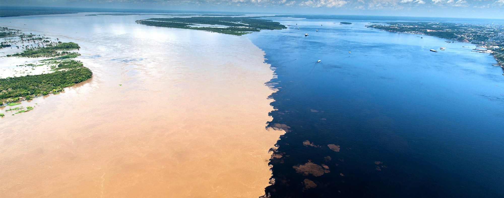
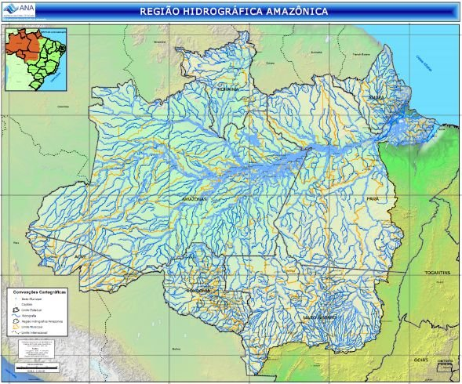

Para haver tanta vida na Amazônia, é preciso que haja muita água disponível, não é? Onde fica e como é armazenada tanta água? Entenda agora a Bacia Hidrográfica Amazônica, responsável por esse feito.
Basicamente, uma bacia hidrográfica é a região drenada por um ou mais rios principais e seus afluentes (rios menores das proximidades que o alimentam), na qual tais rios passam e levam as chuvas e outras descargas de água locais. Bacias hidrográficas são delimitadas por divisores de águas, elementos geográficos como o relevo de serras e planaltos que separam o fluxo da água doce corrente na Terra.
A Bacia Amazônica é formada por várias bacias unidas em volta do rio Amazonas (principal) que deságua no oceano Atlântico próximo a Belém e Macapá. Dela participam as bacias dos rios Negro, Madeira, Solimões, Abacaxis, Tapajós, Xingu, Branco etc., além de aquíferos, rios menores, lagos e igarapés que serpenteiam a Amazônia. Ela tem colossais 6,5 milhões de quilômetros quadrados, ocupa 2/5 da América do Sul e armazena 1/5 da água doce do mundo, além de possuir espécies aquáticas únicas, muita vida, importância socioeconômica e rios de características diferenciadas. Vamos lá aprofundar?
Onde ela começa e termina? Seus divisores de águas são o Escudo das Guianas a Norte; os Andes a Oeste, onde nasce o Rio Amazonas; e o Escudo Brasileiro ao Sul, além de a leste e nordeste desaguar no Oceano Atlântico. Curiosamente, parte da foz deste maior rio do mundo é em Delta, com a formação de ilhas e menor velocidade da água, e outra parte em Estuário, correndo firme em direção ao mar e gerando o fenômeno da pororoca. Essas limitações da bacia a tornam única, pois dependendo de onde nasce um rio, eles apresentam aspectos diferentes. Por exemplo, rios de água escura nascem costumeiramente ao norte no Escudo das Guianas, rios de águas esverdeadas no Escudo Brasileiro e rios de água branca ou barrenta vêm dos Andes.

Para criar uma noção a mais das dimensões geográficas da Bacia Amazônica, segue um mapa:
A Bacia Amazônica depende da Floresta Amazônica para sua manutenção, e a Floresta Amazônica depende da água da Bacia para existir, formando um fino equilíbrio ecológico que influencia todo o planeta. As águas da Bacia Amazônica e da Floresta levam chuva ao Brasil Central e Sudeste pelos rios voadores, massas de ar carregadas de vapor d'água que regulam as chuvas do Brasil e permitem que Centro-Oeste e Sudeste não sejam desérticos, daí uma importância de se conservar a Amazônia. A Bacia Amazônica, com seus peixes e demais seres, fornece alimento culturalmente tradicional e local para a região, além de seus rios servirem como estradas da Região Norte, mostrando que ser humano e natureza devem andar lado a lado, pois a humanidade é parte da Terra e necessita dela em equilíbrio para manter sua sobrevivência e atividades.
Faz parte da Bacia Amazônica o belíssimo Encontro das Águas entre os Rios Negro e Solimões para formar o Amazonas nas proximidades de Manaus/AM. As águas dos dois rios correm lado a lado por quilômetros sem se misturar de vez devido às diferenças de acidez, temperatura, composição, partículas e velocidade dos dois rios. Esse fenômeno também ocorre no Pará entre o Rio Tapajós e o Amazonas, e em muitos outros lugares dessa bacia hidrográfica.
Projeto Angelim Vermelho | Desenvolvido por Maria Eduarda Ferreira Rodrigues e Sabrina da Paz Alves | Fundação Matias Machline - 2021